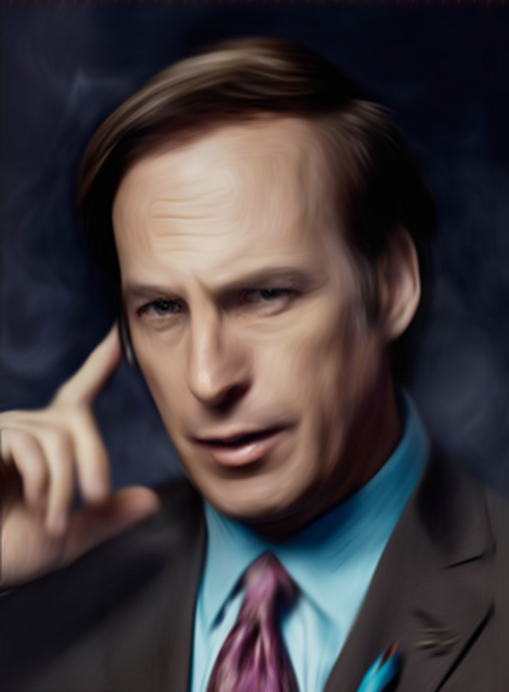

Personajes de Breaking Bad
Walter White

Walter White es el protagonista de la serie de televisión Breaking Bad, interpretado por Bryan Cranston. Es un químico y profesor de instituto que, al ser diagnosticado con cáncer de pulmón terminal, decide convertirse en un fabricante y distribuidor de metanfetamina para asegurar el futuro económico de su familia. Con la ayuda de su ex alumno Jesse Pinkman, Walter crea una droga de alta pureza y color azul que se hace famosa en el mercado ilegal. A lo largo de la serie, Walter pasa de ser un hombre común y corriente a un despiadado capo de la droga, conocido por su alias Heisenberg. Walter se enfrenta a diversos peligros y enemigos, tanto en el mundo del narcotráfico como en su propia familia, que desconoce su doble vida. Walter es un personaje complejo y contradictorio, que muestra tanto bondad como crueldad, lealtad como traición, y genialidad como arrogancia. Su historia es una de las más aclamadas y premiadas de la televisión moderna
Jesse Pinkman

Jesse Pinkman es el socio y amigo de Walter White en la serie de televisión Breaking Bad, interpretado por Aaron Paul. Es un ex traficante y consumidor de metanfetamina que se une a Walter, su antiguo profesor de química, para fabricar y vender una droga de alta calidad y color azul. Jesse es un personaje rebelde y conflictivo, que tiene problemas con su familia, con la ley y con su propia conciencia. A lo largo de la serie, Jesse sufre varias pérdidas y traumas que le afectan profundamente. Jesse es leal a Walter, a pesar de las diferencias y los enfrentamientos que tienen, pero también se siente manipulado y traicionado por él en varias ocasiones. Jesse es un personaje carismático y emotivo, que muestra compasión y arrepentimiento por sus acciones. Su historia es una de las más dramáticas y conmovedoras de la serie.
Skyler White

Skyler White es la esposa de Walter White y la hermana de Marie Schrader en la serie de televisión Breaking Bad, interpretada por Anna Gunn. Es una contable y escritora que se ve involucrada en el negocio de la metanfetamina de su marido, al que ayuda a lavar el dinero sucio. Skyler ama a Walter, pero su matrimonio se deteriora por las mentiras y el peligro que él representa. Skyler intenta divorciarse de Walter, pero él se niega y la manipula para que siga con él. Skyler también tiene una aventura con su antiguo jefe, Ted Beneke, lo que provoca el resentimiento de Walter. Skyler se preocupa por la seguridad de sus hijos, Walter Jr. y Holly, y trata de alejarlos de la influencia de Walter. Skyler es un personaje inteligente y fuerte, pero también vulnerable y asustada por la situación en la que se encuentra. Su historia es una de las más dramáticas y realistas de la serie.
Hank Schrader

Hank Schrader es el cuñado de Walter White y el marido de Marie Schrader en la serie de televisión Breaking Bad, interpretado por Dean Norris. Es un agente especial de la DEA que lidera la investigación del misterioso traficante de metanfetamina conocido como Heisenberg, sin saber que se trata de su propio familiar. Hank es un hombre valiente y dedicado a su trabajo, pero también arrogante y burlón. Hank se enfrenta a varios peligros y amenazas por parte de los cárteles de la droga, lo que le provoca estrés postraumático y problemas físicos. Hank tiene una buena relación con su sobrino Walter Jr., al que trata como a un hijo, y una amistad con su compañero Steven Gomez. Hank descubre la verdad sobre Walter cuando encuentra un libro de poesía con una dedicatoria sospechosa en su baño. A partir de entonces, Hank se obsesiona con atrapar a Walter y lo persigue sin descanso, incluso aliándose con Jesse Pinkman. Hank es un personaje heroico y determinado, que busca hacer justicia y proteger a su familia.
Marie Schrader

Marie Schrader es la esposa de Hank Schrader y la hermana de Skyler White en la serie de televisión Breaking Bad, interpretada por Betsy Brandt. Es una tecnóloga radiológica que trabaja en el Centro de Radiología Kleinman. Marie es muy cercana a su hermana, aunque a veces la irrita con sus consejos y su curiosidad. Marie sufre de cleptomanía y roba objetos en tiendas, inventándose personalidades falsas para justificarse. Marie también tiene una obsesión con el color púrpura, que se refleja en su ropa y su decoración. Marie apoya a su marido, que es un agente de la DEA que persigue al traficante Heisenberg, sin saber que es el cuñado de ambos, Walter White. Marie se entera de la verdad sobre Walter cuando Hank es atacado por los sicarios de Gus Fring y queda gravemente herido. Marie se preocupa por la salud de Hank y lo ayuda a recuperarse, mientras sigue buscando pruebas contra Walter. Marie es un personaje leal y protector, pero también impulsivo y nervioso. Su historia es una de las más emotivas y humanas de la serie.
Walter White Jr.
Walter White Jr. es el hijo de Walter y Skyler White y el hermano de Holly White en la serie de televisión Breaking Bad, interpretado por RJ Mitte. Es un estudiante de instituto que padece parálisis cerebral, lo que le dificulta el habla y el movimiento, por lo que usa muletas. Walter Jr. admira a su padre, pero también se siente decepcionado y confundido por sus mentiras y su comportamiento. Walter Jr. también tiene una buena relación con su tío Hank, que es un agente de la DEA que investiga al traficante Heisenberg, sin saber que es el mismo Walter. Walter Jr. se entera de la verdad sobre su padre cuando éste llama a su casa y le confiesa que es el responsable de la muerte de Hank. Walter Jr. se enfada con su padre y lo rechaza, adoptando el apodo de Flynn para distanciarse de él. Walter Jr. se preocupa por su madre y su hermana, y trata de mantenerse fuerte ante la situación. Walter Jr. es un personaje inocente y sensible, que sufre las consecuencias de las acciones de su padre.
Gustavo Fring

Gustavo Fring es el antagonista principal de la serie de televisión Breaking Bad, interpretado por Giancarlo Esposito. Es un empresario y filántropo chileno-estadounidense que posee una cadena de restaurantes de pollo frito llamada Los Pollos Hermanos. Sin embargo, detrás de su fachada de hombre respetable y exitoso, se esconde un poderoso narcotraficante que distribuye metanfetamina de alta calidad en el suroeste de Estados Unidos. Gus colabora inicialmente con el cártel de Juárez, pero luego rompe su alianza y se convierte en su enemigo. Gus tiene una venganza personal contra el cártel, especialmente contra Hector Salamanca, que asesinó a su socio y amante Max Arciniega años atrás. Gus recluta a Walter White y Jesse Pinkman como sus cocineros de metanfetamina, pero su relación se deteriora por las acciones imprudentes de ambos. Gus también cuenta con la ayuda de Mike Ehrmantraut, su jefe de seguridad y mano derecha. Gus es un personaje frío y calculador, que oculta sus emociones y sus intenciones. Es capaz de cometer actos brutales y despiadados para proteger su imperio y lograr sus objetivos. Su historia es una de las más intrigantes y tensas de la serie.
Saul Goodman
Saul Goodman es un personaje de la serie de televisión Breaking Bad, interpretado por Bob Odenkirk. Es un abogado criminalista que se anuncia en la televisión con el lema “¡Mejor llama a Saul!” (Better Call Saul). Su nombre real es James “Jimmy” McGill, pero adopta el alias de Saul Goodman para atraer a más clientes, ya que suena como “it’s all good, man” (está todo bien, hombre). Saul es un experto en encontrar lagunas legales, negociar acuerdos y solucionar problemas para sus clientes, que suelen ser delincuentes o personas involucradas en el mundo de las drogas. Saul conoce a Walter White y Jesse Pinkman cuando ellos lo secuestran y lo amenazan para que no denuncie a uno de sus distribuidores, Badger, que ha sido arrestado. Saul les ofrece sus servicios y se convierte en su abogado de confianza, ayudándoles a lavar el dinero, contactar con otros narcos como Gus Fring y escapar de la ley. Saul también tiene conexiones con Mike Ehrmantraut, un investigador privado y sicario que trabaja para él y para Gus. Saul es un personaje astuto y humorístico, que usa su ingenio y su carisma para salir de situaciones difíciles. Su historia es una de las más divertidas e irónicas de la serie.
Mike Ehrmantraut

Mike Ehrmantraut es un personaje de la serie de televisión Breaking Bad, interpretado por Jonathan Banks. Es un ex policía de Filadelfia que se convierte en investigador privado, sicario y solucionador de problemas para varios criminales, entre ellos Saul Goodman, Gus Fring y Walter White. Mike tiene una gran experiencia y habilidad para operar en el mundo delictivo, sin dejar rastros ni llamar la atención. Es un hombre frío y pragmático, que cumple con su trabajo sin vacilar ni cuestionar. Sin embargo, también tiene un lado humano y sensible, que se refleja en su amor por su nieta Kaylee y su lealtad a sus socios. Mike conoce a Walter y Jesse cuando Saul lo contrata para limpiar una escena del crimen y evitar que Badger sea interrogado por la DEA. Mike se une al negocio de la metanfetamina como jefe de seguridad de Gus, pero luego se alía con Walter y Jesse cuando Gus intenta matarlos. Mike es un personaje respetado y temido, que se enfrenta a varios peligros y desafíos en su carrera criminal. Su historia es una de las más intensas y trágicas de la serie.
Lydia Rodarte-Quayle

Lydia Rodarte-Quayle es un personaje de la serie de televisión Breaking Bad, interpretado por Laura Fraser. Es una ejecutiva de Madrigal Electromotive, una empresa que provee de metilamina a los fabricantes de metanfetamina, entre ellos Gus Fring, Walter White y Jack Welker. Lydia es una mujer nerviosa y paranoica, que trata de ocultar su participación en el negocio ilegal y mantener su imagen de madre soltera y profesional exitosa. Lydia colabora con Gus hasta que éste es asesinado por Walter, y luego se alía con Walter y sus socios para seguir suministrándoles metilamina. Lydia también tiene contactos en el mercado europeo, donde distribuye la droga de color azul que produce Walter. Lydia es un personaje ambicioso y despiadado, que no duda en ordenar o pedir la muerte de aquellos que considera una amenaza o un obstáculo para sus planes. Su historia es una de las más intrigantes y peligrosas de la serie.
Todd Alquist

Todd Alquist es un personaje de la serie de televisión Breaking Bad, interpretado por Jesse Plemons. Es un empleado de una empresa de fumigación que se convierte en asistente y cocinero de metanfetamina para Walter White y su tío Jack Welker, el líder de una banda de neonazis. Todd es un hombre joven y aparentemente inocente, pero en realidad es un psicópata que no tiene escrúpulos ni remordimientos a la hora de matar o torturar a quien se interponga en su camino. Todd participa en el robo de metilamina a un tren, donde mata a un niño que los ve. También ayuda a su tío a secuestrar y asesinar a varios hombres relacionados con Gus Fring, y a matar a Hank Schrader y Steve Gomez. Todd desarrolla una obsesión por Lydia Rodarte-Quayle, una ejecutiva de Madrigal que le suministra metilamina y con quien tiene una relación profesional y sentimental. Todd también secuestra y esclaviza a Jesse Pinkman, obligándolo a cocinar metanfetamina para él y su banda. Todd es un personaje cruel y despiadado, que representa una de las mayores amenazas para Walter y Jesse. Su historia es una de las más violentas y siniestras de la serie.